library(tidyverse)
library(tibble)
library(ggplot2)
library(scales)
library(GGally)
library(lattice)Capstone with Airquality Data
Problem 1: Importing and exploring data
P1.1. Rename Data set
- Get a local copy of the dataset “airquality” and name it “df” so that you can use it.
- Identify data type, Change it to tibble data type and make change to the df.
- Confirm the data type is tibble by printing df out.
df <- airquality
air_quality.tib <- as_tibble(df)
print(air_quality.tib)# A tibble: 153 × 6
Ozone Solar.R Wind Temp Month Day
<int> <int> <dbl> <int> <int> <int>
1 41 190 7.4 67 5 1
2 36 118 8 72 5 2
3 12 149 12.6 74 5 3
4 18 313 11.5 62 5 4
5 NA NA 14.3 56 5 5
6 28 NA 14.9 66 5 6
7 23 299 8.6 65 5 7
8 19 99 13.8 59 5 8
9 8 19 20.1 61 5 9
10 NA 194 8.6 69 5 10
# ℹ 143 more rowsP1.2. Variable Definition and Background of the Topic
- Look up the help to understand the definition of the variables.
?airqualityIn addition, loop Ozone and related variables on the internet. A quick search on Ozone leads me to https://www.epa.gov/ozone-pollution-and-your-patients-health/what-ozone. Read a bit to gain domain knowledge, which is needed when you analyze the data. It appears that Southern California has the highest concentration of Ozone.
Given the definition of the data and the knowledge you gained from your research, what would you think are potential dependent variables and independent variables? Can you form a hypothesis regarding the relationships among the variables?
It seems reasonable to treat Ozone as a dependent variable and Solar.R, Wind, and Temp. Also, the Ozone amount may be dependent on the Month such that Ozone amounts are highest during summer months.
Thus, I would form hypotheses as follows.
- H1: Ozone amount will be associated positively with Solar radiation amount (Solar.R)
- H2: Ozone amount will be associated negatively with Wind speed (Wind)
- H3: Ozone amount will be associated positively with Maximum daily temperature (Temp)
- H4: Ozone amount will be highest during summer months.
P1.3. View data
- Next, show the first 7 rows of it. Pay attention to the names of the variables.
head(air_quality.tib, 7)# A tibble: 7 × 6
Ozone Solar.R Wind Temp Month Day
<int> <int> <dbl> <int> <int> <int>
1 41 190 7.4 67 5 1
2 36 118 8 72 5 2
3 12 149 12.6 74 5 3
4 18 313 11.5 62 5 4
5 NA NA 14.3 56 5 5
6 28 NA 14.9 66 5 6
7 23 299 8.6 65 5 7- Look for unique values of categorical values (i.e., Month and Day variables). What did you find? Do you feel you should change the data type of the two variables? Why or why not?
- It seems like Temp and wind have the biggest impact on the Ozone.
- There are only five months in the data while there are 31 days. For now, let’s change the month data type from a number to a factor.
air_quality.tib$Month<-as.factor(air_quality.tib$Month)
str(air_quality.tib)tibble [153 × 6] (S3: tbl_df/tbl/data.frame)
$ Ozone : int [1:153] 41 36 12 18 NA 28 23 19 8 NA ...
$ Solar.R: int [1:153] 190 118 149 313 NA NA 299 99 19 194 ...
$ Wind : num [1:153] 7.4 8 12.6 11.5 14.3 14.9 8.6 13.8 20.1 8.6 ...
$ Temp : int [1:153] 67 72 74 62 56 66 65 59 61 69 ...
$ Month : Factor w/ 5 levels "5","6","7","8",..: 1 1 1 1 1 1 1 1 1 1 ...
$ Day : int [1:153] 1 2 3 4 5 6 7 8 9 10 ...- Write a code that reveals how many variables and observations are in the data set.
prod(dim(air_quality.tib))[1] 918nrow(air_quality.tib)[1] 153P1.4. Simple Descriptive statistics
- Also, write a code that gives you some basic descriptive statistics. You will notice that two variables have missing values.
summary(air_quality.tib) Ozone Solar.R Wind Temp Month
Min. : 1.00 Min. : 7.0 Min. : 1.700 Min. :56.00 5:31
1st Qu.: 18.00 1st Qu.:115.8 1st Qu.: 7.400 1st Qu.:72.00 6:30
Median : 31.50 Median :205.0 Median : 9.700 Median :79.00 7:31
Mean : 42.13 Mean :185.9 Mean : 9.958 Mean :77.88 8:31
3rd Qu.: 63.25 3rd Qu.:258.8 3rd Qu.:11.500 3rd Qu.:85.00 9:30
Max. :168.00 Max. :334.0 Max. :20.700 Max. :97.00
NA's :37 NA's :7
Day
Min. : 1.0
1st Qu.: 8.0
Median :16.0
Mean :15.8
3rd Qu.:23.0
Max. :31.0
- Use the glimpse() function from dplyr package and skim() function from skimr package to understand the data. Skim function shows mean, sd, percentiles, and histogram.
- Looking at the histogram, which variable is most skewed?
- It looks like the day is the most skewed, it seems to have the biggest change out of the other ones.
Hint. you may need to use skimr::skim() to make the skim function work.
library(skimr)
library(dplyr)
glimpse(air_quality.tib)Rows: 153
Columns: 6
$ Ozone <int> 41, 36, 12, 18, NA, 28, 23, 19, 8, NA, 7, 16, 11, 14, 18, 14, …
$ Solar.R <int> 190, 118, 149, 313, NA, NA, 299, 99, 19, 194, NA, 256, 290, 27…
$ Wind <dbl> 7.4, 8.0, 12.6, 11.5, 14.3, 14.9, 8.6, 13.8, 20.1, 8.6, 6.9, 9…
$ Temp <int> 67, 72, 74, 62, 56, 66, 65, 59, 61, 69, 74, 69, 66, 68, 58, 64…
$ Month <fct> 5, 5, 5, 5, 5, 5, 5, 5, 5, 5, 5, 5, 5, 5, 5, 5, 5, 5, 5, 5, 5,…
$ Day <int> 1, 2, 3, 4, 5, 6, 7, 8, 9, 10, 11, 12, 13, 14, 15, 16, 17, 18,…skimr::skim(air_quality.tib)| Name | air_quality.tib |
| Number of rows | 153 |
| Number of columns | 6 |
| _______________________ | |
| Column type frequency: | |
| factor | 1 |
| numeric | 5 |
| ________________________ | |
| Group variables | None |
Variable type: factor
| skim_variable | n_missing | complete_rate | ordered | n_unique | top_counts |
|---|---|---|---|---|---|
| Month | 0 | 1 | FALSE | 5 | 5: 31, 7: 31, 8: 31, 6: 30 |
Variable type: numeric
| skim_variable | n_missing | complete_rate | mean | sd | p0 | p25 | p50 | p75 | p100 | hist |
|---|---|---|---|---|---|---|---|---|---|---|
| Ozone | 37 | 0.76 | 42.13 | 32.99 | 1.0 | 18.00 | 31.5 | 63.25 | 168.0 | ▇▃▂▁▁ |
| Solar.R | 7 | 0.95 | 185.93 | 90.06 | 7.0 | 115.75 | 205.0 | 258.75 | 334.0 | ▅▃▅▇▅ |
| Wind | 0 | 1.00 | 9.96 | 3.52 | 1.7 | 7.40 | 9.7 | 11.50 | 20.7 | ▂▇▇▃▁ |
| Temp | 0 | 1.00 | 77.88 | 9.47 | 56.0 | 72.00 | 79.0 | 85.00 | 97.0 | ▂▃▇▇▃ |
| Day | 0 | 1.00 | 15.80 | 8.86 | 1.0 | 8.00 | 16.0 | 23.00 | 31.0 | ▇▇▇▇▆ |
Problem 2: Visualize numerical variables
P2.1. Histograms
- Visualize numerical data with a histogram. Normality assumption is important when running a regression. If the data is severely skewed, change to a log-based scale to depict the variable on the chart.
hist(df$Temp)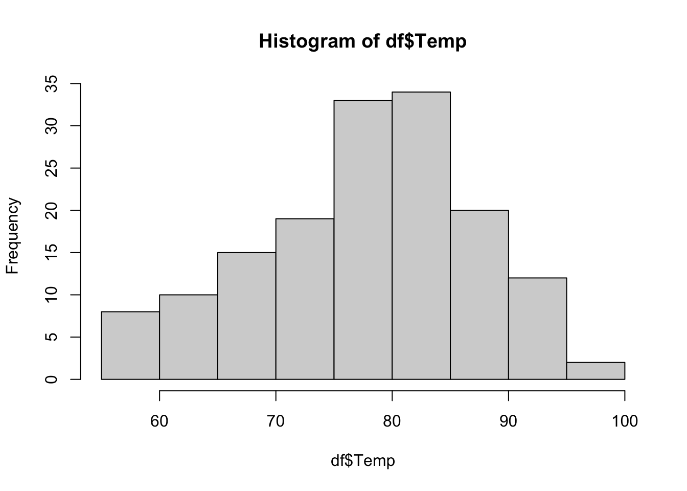
P2.2. Ozone by Continuous variables
- Now, let’s examine the relationship between each of the continuous variables and Ozone at one pair at a time. Which plot should you use and why? Also, add a regression line on the plot too.
ggpairs(df %>% select(Ozone, Solar.R, Wind, Temp, Day))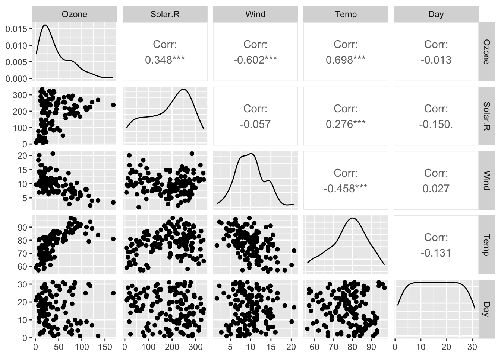
P2.3. Ozone by Month (Monthly ozone amount)
- This time, draw a chart showing the impact of the categorical independent variables on the ozone amount.
df %>%
ggplot(aes(Ozone, Month))+
geom_point() +
geom_smooth(method = "lm", se = FALSE) + #lm = linear model; se = standard error
geom_jitter()+
labs(title = "Ozone Vs. Month",
x = "Ozone",
y = "Month",
)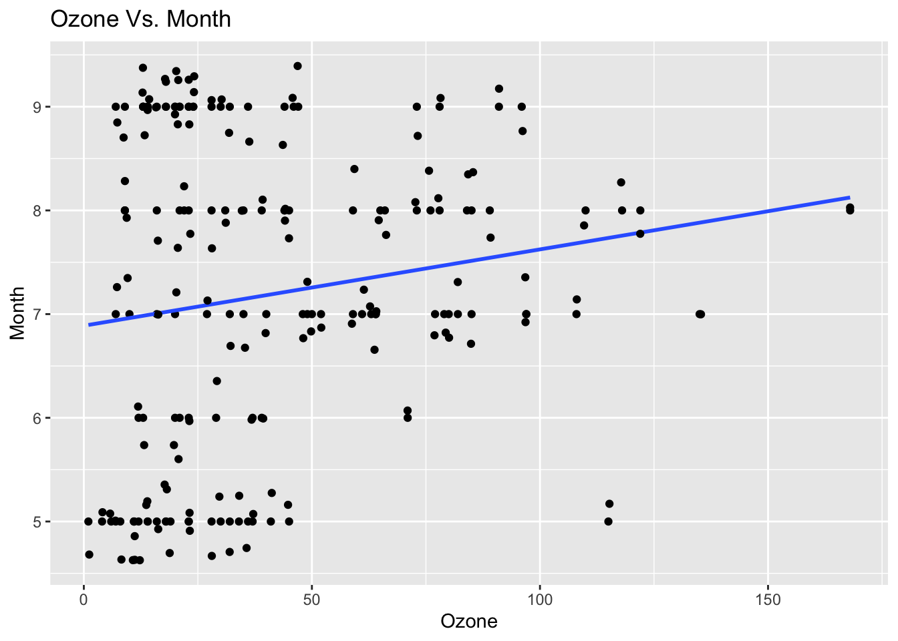
Problem 3: Moderating role of Month?
- Using group_by() and summarise(), find out how many cases exist for each month.
# Group by Month and count cases
df %>%
group_by(Month) %>%
summarise(Count = n()) %>%
print()# A tibble: 5 × 2
Month Count
<int> <int>
1 5 31
2 6 30
3 7 31
4 8 31
5 9 30- Draw a series of charts showing the impact of Solar.R on Ozone cut by Month.
# Solar Radiation vs. Ozone faceted by Month
df %>%
ggplot(aes(x = Solar.R, y = Ozone)) +
geom_point() +
geom_smooth(method = "lm", se = FALSE, color = "red") +
facet_wrap(~ Month) +
labs(title = "Impact of Solar Radiation on Ozone by Month",
x = "Solar Radiation",
y = "Ozone")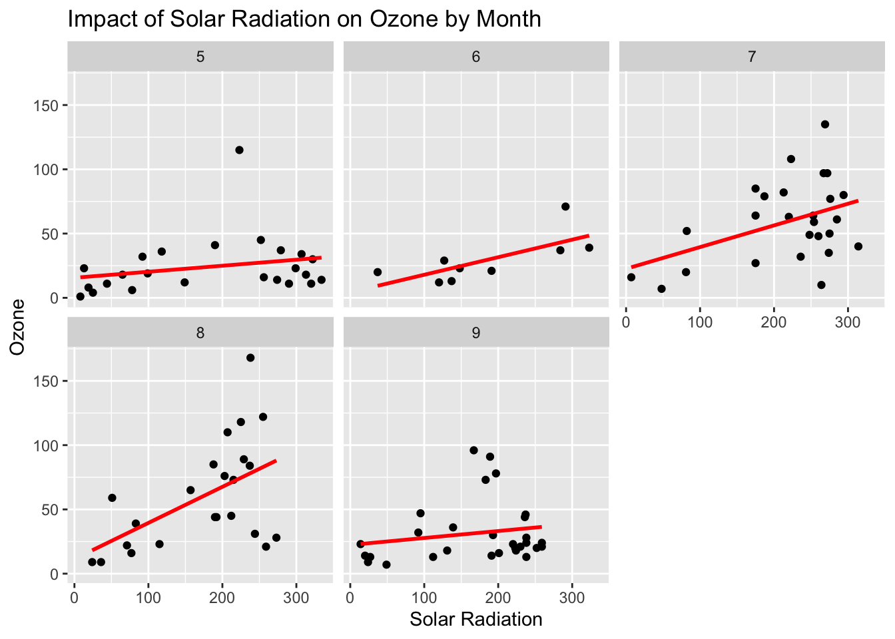
- Draw a series of charts showing the impact of Wind on Ozone cut by Month.
# Wind vs. Ozone faceted by Month
df %>%
ggplot(aes(x = Wind, y = Ozone)) +
geom_point() +
geom_smooth(method = "lm", se = FALSE, color = "green") +
facet_wrap(~ Month) +
labs(title = "Impact of Wind on Ozone by Month",
x = "Wind",
y = "Ozone")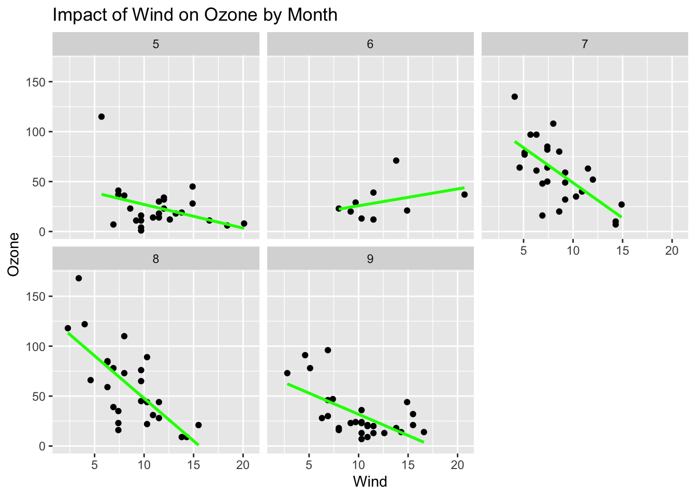
- Draw a series of charts showing the impact of Temp on Ozone cut by Month.
# Temperature vs. Ozone faceted by Month
df %>%
ggplot(aes(x = Temp, y = Ozone)) +
geom_point() +
geom_smooth(method = "lm", se = FALSE, color = "blue") +
facet_wrap(~ Month) +
labs(title = "Impact of Temperature on Ozone by Month",
x = "Temperature",
y = "Ozone")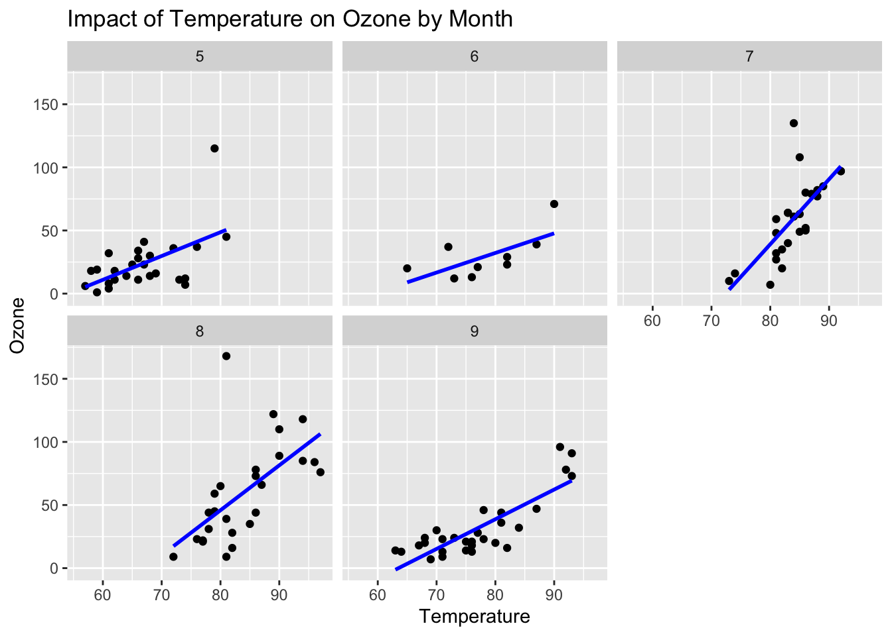
- Based on the outcome, can you conclude that the impact of Solar.R and Wind on Ozone change by Month?
- Based on visual inspection alone, you might observe different slopes across months, indicating that the relationship between Solar.R and Wind with Ozone likely changes with the seasons.
Problem 4: Correlations
- The data visualization so far should have helped you form associations among the variables. Now, let’s try to quantify the associations.
- Run correlations among all numeric variables. Which variables are correlated highly with Ozone? Describe the nature of the association – whether the association is positive or negative, strongly or weakly correlated.
ggcorr(df %>% select(!Ozone))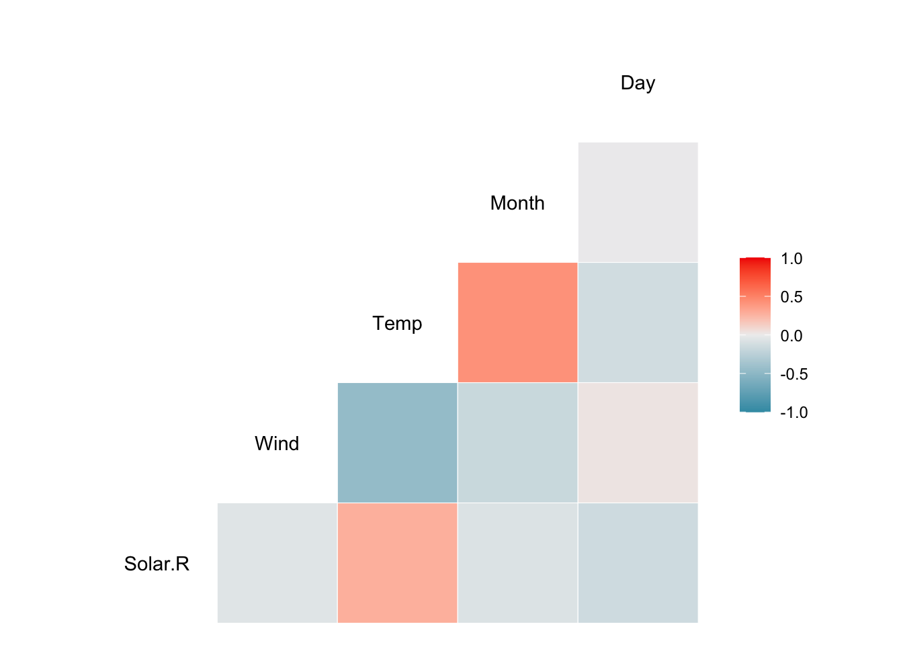
Problem 5: Examine Missing values
When you run simple descriptive statistics previously, you would have noticed that two variables have missing values, which might have given you some trouble while you visualize the data.
Write the codes that tell you (1)where the missing values are located, (2) the number of missing values in the dataset (df), (3) the number of missing values in the Solar.R column, and (4) all the rows that include at least one missing value. (5) Lastly, write the code that returns the number of rows that include at least one missing value. Hint: there are rows that have more than one missing value.
# create a data frame
df.air <- df
# find location of missing values
print("Position of missing values ")[1] "Position of missing values "which(is.na(df.air)) [1] 5 10 25 26 27 32 33 34 35 36 37 39 42 43 45 46 52 53 54
[20] 55 56 57 58 59 60 61 65 72 75 83 84 102 103 107 115 119 150 158
[39] 159 164 180 249 250 251# count total missing values
print("Count of total missing values ")[1] "Count of total missing values "sum(is.na(df.air))[1] 44Problem 6: Missing value imputation
- Replace all the missing values in the Solar.R column with the median of the values in the column.
- Replace all the missing values in the Ozone column with the median of the values in the column.
df.air$Solar.R[is.na(df.air$Solar.R)] <- median(df.air$Solar.R, na.rm=TRUE)
print(df.air) Ozone Solar.R Wind Temp Month Day
1 41 190 7.4 67 5 1
2 36 118 8.0 72 5 2
3 12 149 12.6 74 5 3
4 18 313 11.5 62 5 4
5 NA 205 14.3 56 5 5
6 28 205 14.9 66 5 6
7 23 299 8.6 65 5 7
8 19 99 13.8 59 5 8
9 8 19 20.1 61 5 9
10 NA 194 8.6 69 5 10
11 7 205 6.9 74 5 11
12 16 256 9.7 69 5 12
13 11 290 9.2 66 5 13
14 14 274 10.9 68 5 14
15 18 65 13.2 58 5 15
16 14 334 11.5 64 5 16
17 34 307 12.0 66 5 17
18 6 78 18.4 57 5 18
19 30 322 11.5 68 5 19
20 11 44 9.7 62 5 20
21 1 8 9.7 59 5 21
22 11 320 16.6 73 5 22
23 4 25 9.7 61 5 23
24 32 92 12.0 61 5 24
25 NA 66 16.6 57 5 25
26 NA 266 14.9 58 5 26
27 NA 205 8.0 57 5 27
28 23 13 12.0 67 5 28
29 45 252 14.9 81 5 29
30 115 223 5.7 79 5 30
31 37 279 7.4 76 5 31
32 NA 286 8.6 78 6 1
33 NA 287 9.7 74 6 2
34 NA 242 16.1 67 6 3
35 NA 186 9.2 84 6 4
36 NA 220 8.6 85 6 5
37 NA 264 14.3 79 6 6
38 29 127 9.7 82 6 7
39 NA 273 6.9 87 6 8
40 71 291 13.8 90 6 9
41 39 323 11.5 87 6 10
42 NA 259 10.9 93 6 11
43 NA 250 9.2 92 6 12
44 23 148 8.0 82 6 13
45 NA 332 13.8 80 6 14
46 NA 322 11.5 79 6 15
47 21 191 14.9 77 6 16
48 37 284 20.7 72 6 17
49 20 37 9.2 65 6 18
50 12 120 11.5 73 6 19
51 13 137 10.3 76 6 20
52 NA 150 6.3 77 6 21
53 NA 59 1.7 76 6 22
54 NA 91 4.6 76 6 23
55 NA 250 6.3 76 6 24
56 NA 135 8.0 75 6 25
57 NA 127 8.0 78 6 26
58 NA 47 10.3 73 6 27
59 NA 98 11.5 80 6 28
60 NA 31 14.9 77 6 29
61 NA 138 8.0 83 6 30
62 135 269 4.1 84 7 1
63 49 248 9.2 85 7 2
64 32 236 9.2 81 7 3
65 NA 101 10.9 84 7 4
66 64 175 4.6 83 7 5
67 40 314 10.9 83 7 6
68 77 276 5.1 88 7 7
69 97 267 6.3 92 7 8
70 97 272 5.7 92 7 9
71 85 175 7.4 89 7 10
72 NA 139 8.6 82 7 11
73 10 264 14.3 73 7 12
74 27 175 14.9 81 7 13
75 NA 291 14.9 91 7 14
76 7 48 14.3 80 7 15
77 48 260 6.9 81 7 16
78 35 274 10.3 82 7 17
79 61 285 6.3 84 7 18
80 79 187 5.1 87 7 19
81 63 220 11.5 85 7 20
82 16 7 6.9 74 7 21
83 NA 258 9.7 81 7 22
84 NA 295 11.5 82 7 23
85 80 294 8.6 86 7 24
86 108 223 8.0 85 7 25
87 20 81 8.6 82 7 26
88 52 82 12.0 86 7 27
89 82 213 7.4 88 7 28
90 50 275 7.4 86 7 29
91 64 253 7.4 83 7 30
92 59 254 9.2 81 7 31
93 39 83 6.9 81 8 1
94 9 24 13.8 81 8 2
95 16 77 7.4 82 8 3
96 78 205 6.9 86 8 4
97 35 205 7.4 85 8 5
98 66 205 4.6 87 8 6
99 122 255 4.0 89 8 7
100 89 229 10.3 90 8 8
101 110 207 8.0 90 8 9
102 NA 222 8.6 92 8 10
103 NA 137 11.5 86 8 11
104 44 192 11.5 86 8 12
105 28 273 11.5 82 8 13
106 65 157 9.7 80 8 14
107 NA 64 11.5 79 8 15
108 22 71 10.3 77 8 16
109 59 51 6.3 79 8 17
110 23 115 7.4 76 8 18
111 31 244 10.9 78 8 19
112 44 190 10.3 78 8 20
113 21 259 15.5 77 8 21
114 9 36 14.3 72 8 22
115 NA 255 12.6 75 8 23
116 45 212 9.7 79 8 24
117 168 238 3.4 81 8 25
118 73 215 8.0 86 8 26
119 NA 153 5.7 88 8 27
120 76 203 9.7 97 8 28
121 118 225 2.3 94 8 29
122 84 237 6.3 96 8 30
123 85 188 6.3 94 8 31
124 96 167 6.9 91 9 1
125 78 197 5.1 92 9 2
126 73 183 2.8 93 9 3
127 91 189 4.6 93 9 4
128 47 95 7.4 87 9 5
129 32 92 15.5 84 9 6
130 20 252 10.9 80 9 7
131 23 220 10.3 78 9 8
132 21 230 10.9 75 9 9
133 24 259 9.7 73 9 10
134 44 236 14.9 81 9 11
135 21 259 15.5 76 9 12
136 28 238 6.3 77 9 13
137 9 24 10.9 71 9 14
138 13 112 11.5 71 9 15
139 46 237 6.9 78 9 16
140 18 224 13.8 67 9 17
141 13 27 10.3 76 9 18
142 24 238 10.3 68 9 19
143 16 201 8.0 82 9 20
144 13 238 12.6 64 9 21
145 23 14 9.2 71 9 22
146 36 139 10.3 81 9 23
147 7 49 10.3 69 9 24
148 14 20 16.6 63 9 25
149 30 193 6.9 70 9 26
150 NA 145 13.2 77 9 27
151 14 191 14.3 75 9 28
152 18 131 8.0 76 9 29
153 20 223 11.5 68 9 30- Take a look at the descriptive statistics again.
- Also, get the mean and standard deviation of all continuous variables.
mean(df.air$Ozone)[1] NAmean(df.air$Solar.R)[1] 186.8039mean(df.air$Wind)[1] 9.957516mean(df.air$Temp)[1] 77.88235mean(df.air$Month)[1] 6.993464mean(df.air$Day)[1] 15.80392Problem 7: Correlations after missing value imputation
P7.1. Correlation with raw Ozone
- Run the correlation analysis you did in Problem 4 again. Compare the results of the correlations before and after missing value imputations. What can you tell about the strength of association between Ozone and the other three variables?
ggcorr(df.air %>% select(!Ozone))P7.2. Correlations with Logged Ozone
- This time, use create a new variable by taking the log of Ozone – log(Ozone) – as Ozone is severely skewed. Write the code to repeat (1) with the log-transformed form of Ozone. What can you tell about the strength of the association between Ozone and the other three variables?
# Create a new variable: Log-transformed Ozone
df <- df %>%
mutate(Ozone_logged = log(Ozone))
# Calculate correlations with logged Ozone
correlation_matrix <- df %>%
select(Ozone_logged, Solar.R, Wind, Temp) %>%
cor(use = "complete.obs")
# Print the correlation matrix
print(correlation_matrix) Ozone_logged Solar.R Wind Temp
Ozone_logged 1.0000000 0.4561082 -0.5557003 0.7448232
Solar.R 0.4561082 1.0000000 -0.1271835 0.2940876
Wind -0.5557003 -0.1271835 1.0000000 -0.4971897
Temp 0.7448232 0.2940876 -0.4971897 1.0000000Problem 8: Adding a new variable to the data sets and adjusting data types
- Since the logged Ozone variable seems to be useful, let’s add the variable.
- Look for the unique value of the Month variable. Since Month is categorical data, change it to a factor data type in preparation for visualization
- Also change the data type to tibble permanently.
- Confirm that the changes you made are successful by printing out the data sets.
# Add Ozone_logged to the data
df <- df %>%
mutate(Ozone_logged = log(Ozone))
# Change Month to a factor
df <- df %>%
mutate(Month = factor(Month))
# Convert to tibble
df <- as_tibble(df)
# Verify the changes
print(df)# A tibble: 153 × 7
Ozone Solar.R Wind Temp Month Day Ozone_logged
<int> <int> <dbl> <int> <fct> <int> <dbl>
1 41 190 7.4 67 5 1 3.71
2 36 118 8 72 5 2 3.58
3 12 149 12.6 74 5 3 2.48
4 18 313 11.5 62 5 4 2.89
5 NA NA 14.3 56 5 5 NA
6 28 NA 14.9 66 5 6 3.33
7 23 299 8.6 65 5 7 3.14
8 19 99 13.8 59 5 8 2.94
9 8 19 20.1 61 5 9 2.08
10 NA 194 8.6 69 5 10 NA
# ℹ 143 more rowsstr(df) # Confirm data typestibble [153 × 7] (S3: tbl_df/tbl/data.frame)
$ Ozone : int [1:153] 41 36 12 18 NA 28 23 19 8 NA ...
$ Solar.R : int [1:153] 190 118 149 313 NA NA 299 99 19 194 ...
$ Wind : num [1:153] 7.4 8 12.6 11.5 14.3 14.9 8.6 13.8 20.1 8.6 ...
$ Temp : int [1:153] 67 72 74 62 56 66 65 59 61 69 ...
$ Month : Factor w/ 5 levels "5","6","7","8",..: 1 1 1 1 1 1 1 1 1 1 ...
$ Day : int [1:153] 1 2 3 4 5 6 7 8 9 10 ...
$ Ozone_logged: num [1:153] 3.71 3.58 2.48 2.89 NA ...Problem 9: Data Visualization using imputed data
- Let’s repeat the visualization you did in Problem 2 and Problem 3, using the imputed data and Log-transformed Ozone variable. Specifically, do the following data visualizations.
- Histogram of Ozone, Ozone_logged, and Solar.R
# Histogram for Ozone, Ozone_logged, and Solar.R
df %>%
select(Ozone, Ozone_logged, Solar.R) %>%
gather(variable, value) %>%
ggplot(aes(x = value)) +
geom_histogram(bins = 30, fill = "skyblue", color = "black") +
facet_wrap(~ variable, scales = "free") +
labs(title = "Histograms of Ozone, Ozone_logged, and Solar.R")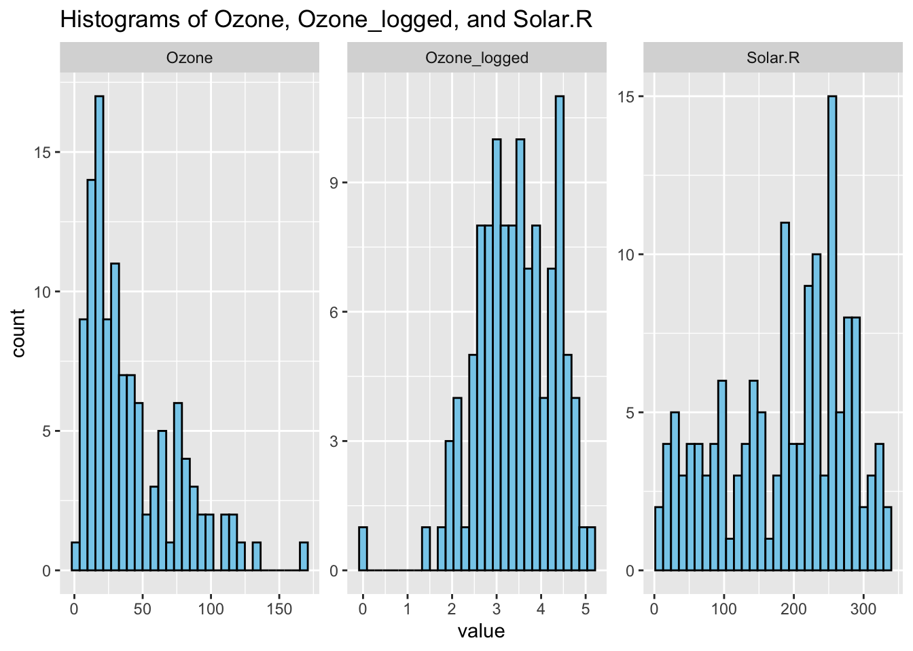
- Ozone by Continuous variables
# Pairwise plot of Ozone_logged vs. continuous variables
ggpairs(df %>% select(Ozone_logged, Solar.R, Wind, Temp))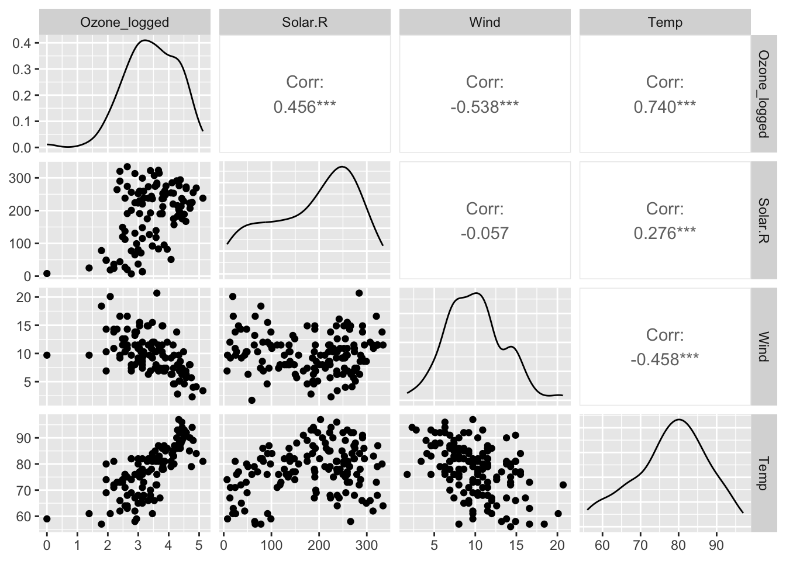
- Ozone by Month
df %>%
ggplot(aes(x = Ozone_logged, y = Month)) +
geom_jitter(width = 0.2, height = 0.1) +
geom_smooth(method = "lm", se = FALSE) +
labs(title = "Logged Ozone vs. Month", x = "Ozone (Logged)", y = "Month")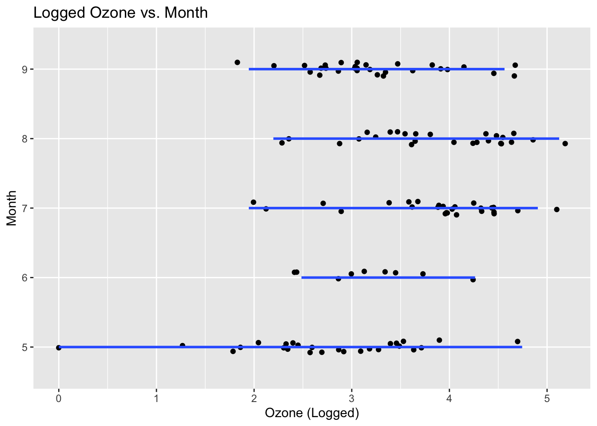
- Moderating Role of Month in the impact of Continuous variables on Ozone
# Impact of Solar.R, Wind, and Temp on Ozone, moderated by Month
df %>%
ggplot(aes(x = Solar.R, y = Ozone_logged)) +
geom_point() +
geom_smooth(method = "lm", se = FALSE) +
facet_wrap(~ Month) +
labs(title = "Impact of Solar Radiation on Logged Ozone by Month")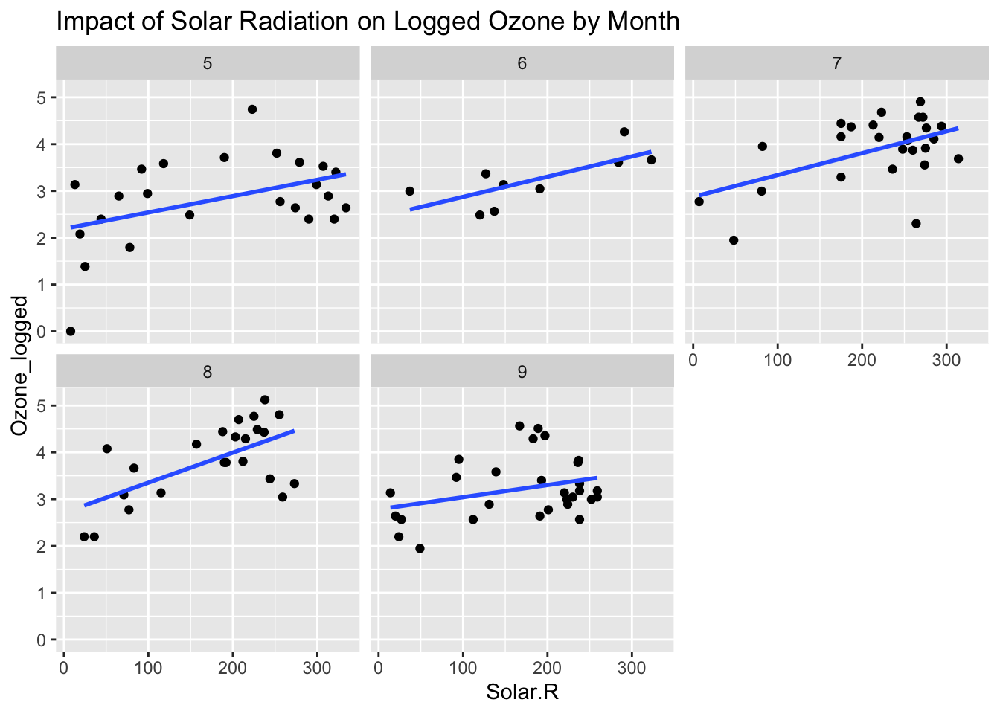
df %>%
ggplot(aes(x = Wind, y = Ozone_logged)) +
geom_point() +
geom_smooth(method = "lm", se = FALSE) +
facet_wrap(~ Month) +
labs(title = "Impact of Wind on Logged Ozone by Month")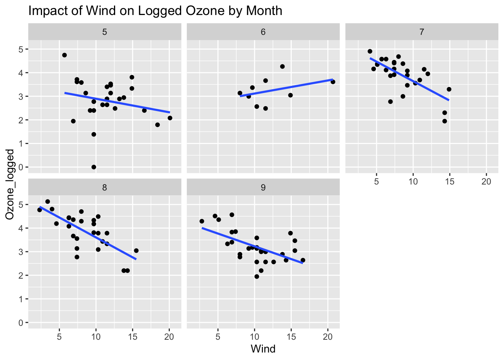
df %>%
ggplot(aes(x = Temp, y = Ozone_logged)) +
geom_point() +
geom_smooth(method = "lm", se = FALSE) +
facet_wrap(~ Month) +
labs(title = "Impact of Temperature on Logged Ozone by Month")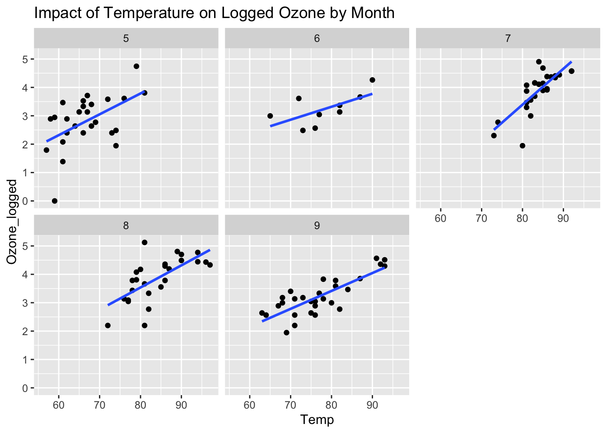
- Do you find the same relationships as before?
Visual comparisons with logged data may show clearer relationships due to reduced skewness.
If the moderating effect of Month is consistent (i.e., slopes differ across months), this confirms that seasonal changes impact these relationships.
Problem 10: Using categorical Ozone amount
P10.1: categorical Ozone
Create a new column called “Ozone_cat.” If the Ozone of the imputed dataset is less than or equal to the 25th quantile of the Ozone amount in the data, put “Low” in the new column, if it is greater than 25th quantile and less than the 75th quantile, put “Middle,” and if it is greater than 75th quantile, put “high” in the new column (use the pipe operator).
Hint: You may use quantile() to find 25th and 75 quantile. You may also use case_when() from dplr.
# Create Ozone_cat based on quantiles
df <- df %>%
mutate(Ozone_cat = case_when(
Ozone <= quantile(Ozone, 0.25, na.rm = TRUE) ~ "Low",
Ozone > quantile(Ozone, 0.25, na.rm = TRUE) &
Ozone <= quantile(Ozone, 0.75, na.rm = TRUE) ~ "Middle",
Ozone > quantile(Ozone, 0.75, na.rm = TRUE) ~ "High"
))
# Ensure Ozone_cat is a factor in the correct order
df <- df %>%
mutate(Ozone_cat = factor(Ozone_cat, levels = c("Low", "Middle", "High")))P10.2: Monthly Ozone Severity
Now that you have created Ozone_cat, which is a factor, let’s draw a chart that shows monthly counts of each of the three levels of Ozone_cat – Low, Middle, and High in that order. Make the chart as professional as it can be.
Hints: When you created the Ozone_cat variable previously, you might have created the level in an order different than the low-middle-high order. If so, you can change the order of the level using a combination of mutate and fct_relevel() and manually type the order you like: “c(”Low”, “Middle”, “High”)“. To generate the count of Ozone_cat, you would like to use”group_by()” and “count().”
# Count of Ozone_cat by Month
df %>%
group_by(Month, Ozone_cat) %>%
count() %>%
ggplot(aes(x = Month, y = n, fill = Ozone_cat)) +
geom_bar(stat = "identity", position = "dodge") +
scale_fill_manual(values = c("Low" = "red", "Middle" = "orange", "High" = "green")) +
labs(title = "Monthly Ozone Severity", x = "Month", y = "Count", fill = "Ozone Category") +
theme_minimal()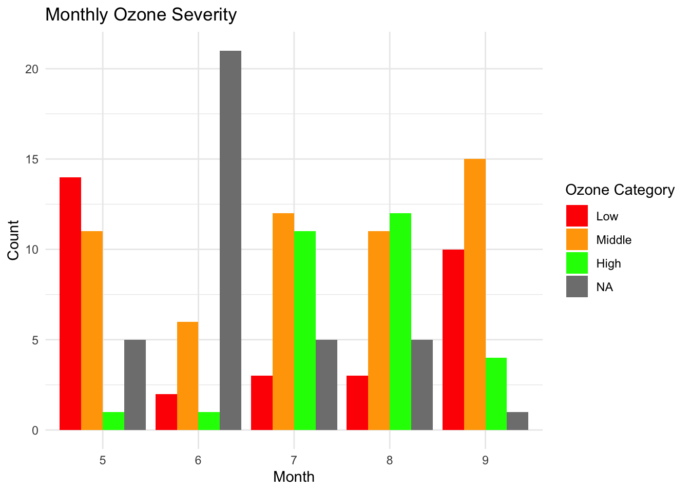
P10.3: Insights from the chart
What can you tell about the monthly Ozone severity?
- Monthly trends: The chart shows how the proportion of Low, Middle, and High ozone levels varies by month.
- Summer months (e.g., June, July) may have more “High” ozone days due to increased sunlight and heat.
- Colder months might show more “Low” ozone days due to reduced ozone formation.
- This analysis helps in seasonal forecasting of ozone levels and can guide policy decisions on air quality management.